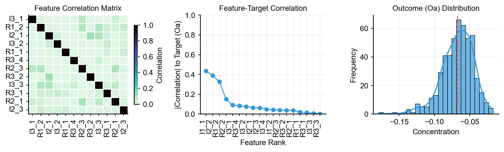
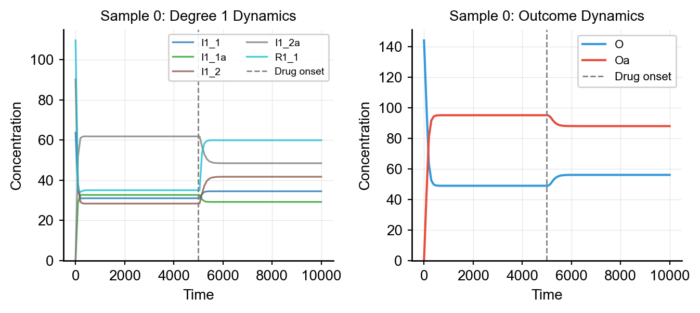
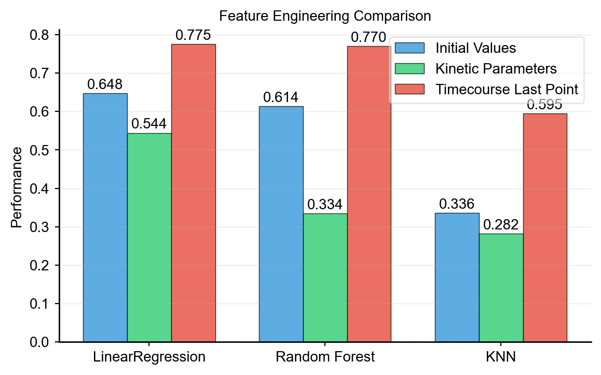

Data Generation
Basic Dataset Generation
Generate a scikit-learn-compatible dataset with make_dataset_drug_response:
from synthetic import Builder, make_dataset_drug_response
vc = Builder.specify(degree_cascades=[3, 6, 15], random_seed=42)
X, y = make_dataset_drug_response(
n=1000,
cell_model=vc,
target_specie='Oa',
)
print(f"Features: {X.shape}") # (1000, n_features)
print(f"Target: {y.shape}") # (1000,)
Understanding the Output
X(DataFrame): Species concentrations as features. Drug species and activated forms are excluded by default.y(Series): The target species value (default:Oa, the activated outcome).target_specie: Change which species is the target. Default is'Oa'.
Feature columns correspond to species names (e.g., R1_1, I1_1, R2_1, ...):
print(X.columns.tolist())
# ['R1_1', 'R1_2', 'R1_3', 'I1_1', 'I1_2', 'I1_3', 'R2_1', ...]
Extended Return Format
Timecourse Data
Use return_timecourse=True to get full simulation trajectories alongside features and targets:
result = make_dataset_drug_response(
n=500,
cell_model=vc,
target_specie='Oa',
return_timecourse=True,
)
X = result['X'] # Feature matrix
y = result['y'] # Target vector
timecourse = result['timecourse'] # Timecourse data (DataFrame of numpy arrays)
parameters = result['parameters'] # Kinetic parameters (DataFrame)
metadata = result['metadata'] # Generation metadata
print(f"Success rate: {metadata['success_rate']:.2%}")
print(f"Simulation: t={metadata['simulation_params']['start']}-{metadata['simulation_params']['end']}")
The timecourse DataFrame has one row per sample, where each cell contains a numpy array of concentration values over time:
# Extract a single sample's timecourse
sample = timecourse.iloc[0]
time_array = np.linspace(
metadata['simulation_params']['start'],
metadata['simulation_params']['end'],
metadata['simulation_params']['points'],
)
# Plot species dynamics for this sample
plt.plot(time_array, sample['Oa'])
Details Format
Use return_details=True (default) for the extended data structure with features, targets, and timecourse in a single call.
Perturbation Strategies
Each sample in the dataset is generated by perturbing the model's initial conditions and/or kinetic parameters. Synthetic supports several perturbation types.
Initial Condition Perturbation
Control how initial species concentrations are varied:
X, y = make_dataset_drug_response(
n=100,
cell_model=vc,
perturbation_type='gaussian',
perturbation_params={'rsd': 0.2},
)
| Type | Description | Parameters |
|---|---|---|
conserve_rules |
Conservation-law-based (default) | shape, base_shape, max_shape |
uniform |
Uniform distribution | min, max |
gaussian |
Gaussian (normal) distribution | rsd (relative standard deviation) |
lognormal |
Log-normal distribution | rsd |
lhs |
Latin Hypercube Sampling | rsd |
Kinetic Parameter Perturbation
Separately control how kinetic parameters are varied:
X, y = make_dataset_drug_response(
n=100,
cell_model=vc,
perturbation_type='gaussian',
perturbation_params={'rsd': 0.2},
param_perturbation_type='lognormal',
param_perturbation_params={'shape': 0.1},
param_seed=42, # Separate seed for parameter perturbations
)
Conserve Rules Perturbation
The default conserve_rules perturbation maintains total species mass by perturbing the ratio between inactive and active forms:
X, y = make_dataset_drug_response(
n=1000,
cell_model=vc,
perturbation_type='conserve_rules',
perturbation_params={'shape': 0.5, 'base_shape': 0.01, 'max_shape': 0.5},
)
This ensures biologically plausible initial conditions where the total concentration of each species pair (e.g., R1_1 + R1_1a) is conserved.
Feature Analysis
Correlation Analysis
Identify which species are most predictive of the drug response:

# Calculate Pearson correlation between each feature and the target
correlations = X.apply(lambda col: col.corr(y))
correlations = correlations.reindex(
correlations.abs().sort_values(ascending=False).index
)
print("Top 10 features correlated with target:")
print(correlations.head(10))
In hierarchical networks, degree 1 species (closest to the drug target) typically show the strongest correlations with the outcome.
Feature Engineering from Timecourse
Extract features from the full timecourse trajectories. The plot below shows a single sample's degree 1 and outcome dynamics:

import numpy as np
import pandas as pd
# Extract last time point (post-drug steady state) for each sample
last_point_features = []
for idx in range(len(timecourse)):
sample_tc = timecourse.iloc[idx]
last_points = {}
for col in sample_tc.index:
if sample_tc[col] is not None:
last_points[col] = sample_tc[col][-1]
last_point_features.append(last_points)
X_timecourse = pd.DataFrame(last_point_features, index=timecourse.index)
Comparing different feature types across ML models shows how feature representation impacts predictive performance:

Exporting Data
Export generated datasets to CSV for use in other tools:
# Features
X.to_csv('synthetic_features.csv', index=False)
# Targets
y.to_csv('synthetic_targets.csv', index=False, header=['target'])
# Combined dataset
combined = pd.concat([X, y], axis=1)
combined.to_csv('synthetic_dataset.csv', index=False)
# Correlation analysis
correlations.to_csv('feature_correlations.csv', header=['correlation'])
Simulation Parameters
Control the simulation time range:
X, y = make_dataset_drug_response(
n=100,
cell_model=vc,
simulation_params={'start': 0, 'end': 8000, 'points': 101},
)
start: Simulation start timeend: Simulation end time (default usesvc._simulation_end, typically 10000)points: Number of timepoints to record
Solvers
Choose between solver backends:
# ScipySolver (default, fast with JIT)
X, y = make_dataset_drug_response(n=100, cell_model=vc, solver_type='scipy', jit=True)
# RoadrunnerSolver (robust, full SBML support)
X, y = make_dataset_drug_response(n=100, cell_model=vc, solver_type='roadrunner')
See Solvers & Simulation for detailed solver documentation.